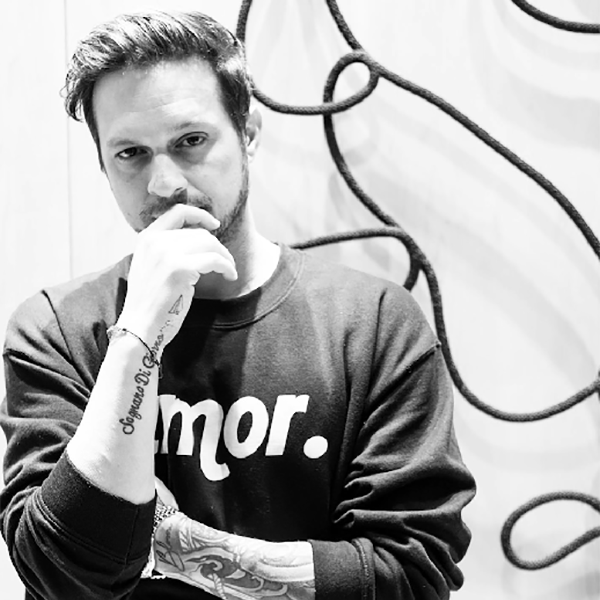

Jay Jbon Bonadio
Artist: Jay “JBon” Bonadio
Biography & Style: Jay Bonadio (known in the art world as “JBon”) is the creator of a revolutionary style known as “Neo-Mosaic”. Bridging the gap between gritty street art and high-end luxury design, Bonadio physically deconstructs his subjects to rebuild them with dazzling complexity.
His creative process is intensely physical and precise. He begins with a foundation of screen-printed imagery—often featuring pop culture icons, musicians, or surreal narratives—and then layers the canvas with shattered glass, crushed crystals, jewelry, and hand-poured epoxy resin. The result is a “shattered” aesthetic that catches the light from every angle, creating a sculptural, 3D effect that changes as you move around the room.
From his massive 40-foot murals in Hard Rock Hotels to his intimate studies of Bonsai trees and nature, Bonadio’s work is about finding beauty in the broken. His pieces are not just meant to be seen; they are meant to be experienced, offering a tactile, high-voltage energy that defines the modern “Pop-Luxury” movement.
Key Elements of His Work:
- Signature Medium: Shattered tempered glass, epoxy resin, and mixed media on board.
- The “JBon” Aesthetic: High-contrast color palettes, often featuring metallic golds, silvers, and deep blacks.
- Themes: Music legends (Jimi Hendrix, Prince), luxury fashion motifs, Bonsai/Nature, and “Pop-Noir” portraits.
- Finish: High-gloss, “wet look” resin finish that encases the sharp textures beneath.